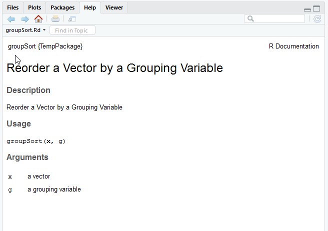

Functions
Advanced R Course
January 23, 2023
Overview
- Functions basics
- Documenting and testing
- Error handling
Functions basics
Components of a function
Functions are defined by three components:
- the name of the function
- the arguments of the function, inside
( ) - the body of the function that computes the result, inside
{ }
They are created using function()
Naming Functions
As with arguments, function names are important:
use a name that describes what it returns (e.g.
t_statistic) or what it does (e.g.remove_na)try to use one convention for combining words (e.g. snake case
t_statisticor camel casetStatistic)avoid using the same name as other functions
Specified Arguments
specified arguments are those named in the function definition, e.g. in rnorm()
the arguments are n, mean and sd.
mean and sd have been given default values in the function definition, but n has not, so the function fails if the user does not pass a value to n
Name and order of Arguments
The user can pass objects to these arguments using their names or by supplying unnamed values in the right order
[1] 7.860573 7.289619 4.539859 -2.189523 10.284554[1] 11.298577 8.337103 16.452792 -9.995030 10.859025So naming and order is important! Some guidelines
- put compulsory arguments first, e.g. data
- put rarely used arguments last, e.g. tolerance setting
- use short but meaningful argument names
- if relevant, use the same argument names as similar functions
Using Arguments
Arguments are used as objects in the function code.
An new environment is created each time the function is called, separate from the global workspace.
Lexical Scoping
If an object is not defined within the function, or passed in as an argument, R looks for it in the parent environment where the function was defined
It is safest (and best practice) to use arguments rather than depend on global variables!
Unspecified Arguments
... or the ellipsis allow unspecified arguments to be passed to the function.
This device is used by functions that work with arbitrary numbers of objects, e.g.
It can also be used to pass on arguments to another function, e.g.
Using ...
Arguments passed to ... can be collected into a list for further analysis
means <- function(...){
dots <- list(...)
vapply(dots, mean, numeric(1), na.rm = TRUE)
}
x <- 1
y <- 2:3
means(x, y)[1] 1.0 2.5Similarly the objects could be concatenated using c()
Return Values (single)
By default, functions return the object created by the last line of code
Alternatively return() can be used to terminate the function and return a given object
Return values (multiple)
Multiple objects can be returned in a list:
Side Effects
A side-effect is a change outside the function that occurs when the function is run, e.g.
- plot to the graphics window or other device
- printing output to the console
- write data to a file
A function can have many side-effects and a return value, but it is best practice to have a separate function for each task, e.g creating a plot or a table.
Writing to file is usually best done outside a function.
Exercise files
https://github.com/Warwick-Stats-Resources/Advanced-R-exercises
You can get the files by creating a new project from version control in RStudio (if set up)
By going to the ‘Code’ button in the repo, then ‘Download ZIP’
Your turn!
In the qq_norm chunk of exercises.Rmd there is some code to compute the slope and intercept of the line to add to a quantile-quantile plot, comparing sample quantiles against theoretical quantiles of a \(N(0, 1)\) distribution.
Turn this code into a function named
qq_normtaking the sample data as an argument and returning the slope and intercept in a list.Run this chunk to source the function, then run the
normal-QQchunk which uses theqq_normfunction to compute parameters for an example plot.Copy
qq_normto theqqchunk and rename itqq. Add a new argumentfunto specify any quantile function (e.g.qt,qf, etc). Give it the default valueqnorm. Inside the function useqfun <- match.fun(fun)to get the quantile function matchingfun, then useqfuninstead ofqnormto computeq_theory. Use...to pass on arguments toqfun.Run the
qqchunk and test your function on thet-QQchunk.
Using Functions From Other Packages
In our own functions (outside of packages), it is possible to use library
But this loads the entire package, potentially leading to clashes with functions from other packages. It is better to use the import package:
Custom ggplot
ggplot2, like dplyr and other tidyverse packages, uses non-standard evaluation, that is, it refers to variable names in a data frame as if they were objects in the current environment
To emulate this, we have to need to embrace arguments
Externalizing function code
It is a good idea to separate function code from analysis code.
Put related functions together and source as required
The import package enables only necessary, top-level functions to be imported to the global workspace:
In either case, import::from commands can be put outside the function body to make the code easier to read.
Documenting and testing
Documenting Functions
Comments help to record what a function does
The docstring package enables roxygen comments to be turned into a help file
View the help file as usual
HTML documentation generated by docstring
For fuller documentation, see the docstring vignette.
ADD LINK TO VIGNETTE
roxygen
ADD A SLIDE WITH SOME RESOURCES ABOUT ROXYGEN
Validation
When developing a function, we will want to validate its output.
A simple approach is to try different inputs
Doing this each time we change the function becomes tedious to check and error-prone as we miss important tests.
Unit testing
The testthat packages allows us to create a test suite:
ADD LINK
Running Tests
If we save the tests in a file, e.g. tests.R, we can use test_file() to run and check all tests:
√ | OK F W S | Context
x | 2 1 | log_2 works correctly
--------------------------------------------------------------------------------
tests.R:9: failure: negative values give error
`log_2(2^-1)` did not throw an error.
--------------------------------------------------------------------------------
== Results =====================================================================
OK: 2
Failed: 1
Warnings: 0
Skipped: 0Your turn!
Copy the qq function to a new R script and save as functions.R. Add roxygen comments at the start of the function body to define a title and parameter documentation.
Run the documentation chunk of exercises.Rmd to view your documentation.
Open the tests.R script. Using expect_equal add some tests for the following
- a sample of 100,000 from N(0, 1) gives approximately slope 1, intercept 0
- a sample of 100,000 from N(0, 1/2) gives approximately slope 2, intercept 0
- sample of 100,000 from N(2, 1) gives approximately slope 1, intercept -2
Use the tol argument in expect_equal to set a tolerance of 0.01.
Run the tests chunk of exercises.Rmd to run your tests with test_file. Try changing the expected tolerance to get a test to fail.
Error handling
Sanity checks
To avoid mistakes, you may want to add some basic sanity checks
Error messages
Often the R messages can be quite obscure
Error in if (max(x) < 1e+07) 0 else x: missing value where TRUE/FALSE neededMore helpful error message can be implemented using stop
Warning messages
Warning messages should be given using warning()
safe_log2 <- function(x) {
if (any(x == 0)) {
x[x == 0] <- 0.1
warning("zeros replaced by 0.1")
}
log(x, 2)
}
safe_log2(0:1)[1] -3.321928 0.000000Other messages can be printed using message().
Suppressing warnings
If a warning is expected, you may wish to suppress it
All warnings will be suppressed however!
Similarly suppressMessages() will suppress messages.
Catching errors/warnings
The purrr package has various functions to catch issues.
ADD LINK
possibly() lets you modify a function to return a specified value when there is an error
Error in log("a"): non-numeric argument to mathematical function[1] NAsafely() works in a similar way but returns a list with elements "result" and "error", so you can record the error message(s).
quietly() lets you modify a function to return printed output, warnings and messages along with the result.
traceback()
When an unexpected error occurs, there are several ways to track down the source of the error, e.g. traceback()
Error in f2(x): object 'qqqq' not found2: f2(2) at #1
1: f1(10)traceback() in RStudio
In RStudio, if Debug > On Error > Error Inspector is checked and the traceback has at least 3 calls, the option to show traceback is presented
Error in f3(x): object 'qqqq' not foundRStudio error inspector giving options to show traceback or rerun with debug
debugonce()
debugonce() flags a function for debugging the next time it is called
debugging in: f2(2)
debug at #1: {
x + qqqq
}
Browse[2]> ls()
[1] "x"
Browse[2]> QWhen in debug mode type n or ↵ to step to the next line and c to continue to the end of a loop or the end of the function.
Breakpoints
Stepping through a function line by line can be tedious. In RStudio we can set custom breakpoints in the source pane
Set breakpoint in RStudio 
Source the code 
Start debugging from breakpoints
 :::{.notes}
:::{.notes} n is automatically printed, so the first prompt is at the breakpoint :::
RStudio’s Rerun with Debug
The Rerun with Debug option will rerun the command that created the error and enter debug mode where the error occurred.
Good points:
- Easy to enter debug mode (when option shown)
- Can click in Traceback pane to view objects at any point in the call stack
Bad points:
- May have gone past source of error (use breakpoints instead)
- May enter deeply nested function: use
recover()to select an earlier entry point
Alternatively use options(error = recover), run code to debug, then set options(error = NULL).
Your turn!
Open the function debug_practice.R and source the example function f.
Try to run
f(10)- there’s an error! Usetraceback()to see which function call generated the error, then fix the problem.Run
f(10)again - there is another error! Can you fix this directly?Try running
f(1)- is the result what you expected? Usedebugonce()to setting debugging onf()and re-runf(1). Step through the function, printing each object as it is created to see what is happening.Can you think how to improve the function? See if you can modify the function to give a sensible result for any integer.
End Matter
Resources
Material (with minor adaptations) from Heather Turner:
https://hturner.github.io/advanced-r/02_writing_r_functions.html
(with permission)
License
Licensed under a Creative Commons Attribution-NonCommercial-ShareAlike 4.0 International License (CC BY-NC-SA 4.0).